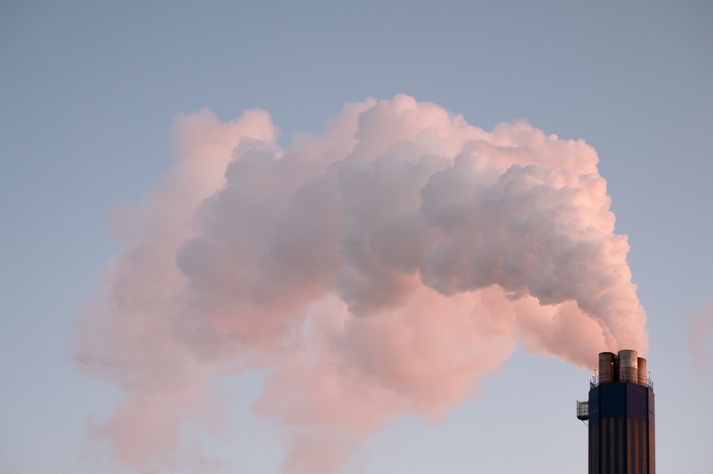

The fashion industry has a disastrous impact. In fact, it is the second
largest polluter in the world, just after the oil industry and the environmental damage is
increasing as the industry grows.
Let’s see some of the global environmental issues in the textile Industry-
The textile industry is the second greatest polluter of the local freshwater
in the world. Over production of materials especially using synthetic fibres is one of the major
factors contributing to the industrial pollution.
Most of the fibres that are used in the garment sector are polyester which releases 2 to 3 times
more carbon emissions than natural fibres like organic cotton.
Textile production is estimated to be responsible for about 20% of global clean water pollution from
dyeing and finishing products. Washing synthetics releases an estimated 0.5 million tons of
microfibres into the ocean a year.
In most of the countries in which garments are produced, untreated toxic wastewaters from textile
factories are dumped directly into the rivers.
Wastewater contains toxic substances such as lead, mercury, and arsenic, among others. These are
extremely harmful for aquatic life and the health of the millions of people living by those rivers
banks. The contamination also reaches the sea and eventually spreads around the globe.
Another major source of water contamination is the use of fertilizers for cotton production which
heavily polluted runoff waters.
Every time we wash a synthetic garment (polyester,nylon, etc), about 1,900 individual microfibres
are released into the water, making their way into our oceans. Scientists have discovered that small
aquatic organisms ingest those microfibres. These are then eaten by small fish which are later eaten
by bigger fish, introducing plastic in our food chain.
Laundering synthetic clothes accounts for 35% of primary microplastics released into the
environment. A single laundry load of polyester clothes can discharge 700,000 micro-plastic fibres
that can end up in the food chain.
FRESH WATER CONSUMPTION
The fashion industry is a major water consumer.
It takes a lot of water to produce textile, plus land to grow cotton and other fibres. It is
estimated that the global textile and clothing industry used 79 billion cubic metres of water in
2015, while the needs of the EU's whole economy amounted to 266 billion cubic metres in 2017. To
make a single cotton t-shirt, 2,700 litres of fresh water are required according to estimates which
is enough to meet one person’s drinking needs for 2.5 years.
Huge quantity of fresh water is used for the
dyeing and finishing process for all of our clothes. As reference, it can take up to 200 tons of
fresh water per ton of dyed fabric.
Also, cotton needs A LOT of water to grow (and heat), but is usually cultivated in warm and dry
areas. Up to 20,000 liters of water is needed to produce just 1kg of cotton. This generates
tremendous pressure on this precious resource, already scarce, and has dramatic ecological
consequences such as the desertification
of the Aral Sea, where cotton production has entirely drained the water (see pictures below).
“ 85 % of the daily water
needs of the entire population of India would be covered by the water used to grow cotton in the
country. 100 million people in India do not have access to drinking water.”— Stephen Leahy, The
Guardian
It occurs all along the supply chain, throughout
consumer use, right up to the end-of-use disposal.
This physical journey of waste is the central tenet of ‘being in or out of fashion’ embedding the
notion that it’s acceptable to discard a garment regardless of whether it is still functionally
useful.
We like buying more variety of Apparel so as to look adorable or to fill the wardrobe but end up in
using few. Of course, as the consumption level is increasing, the production level definitely
increases and those clothes contribute to resource pollution and waste accumulation due to the fact
that most of these items will one day be thrown out.
Clothing has clearly become disposable. As a result, we generate more and more textile waste. A
family in the western world throws away an average of 30 kg of clothing each year. Only 15% is
recycled or donated, and the rest goes directly to the landfill or is incinerated.
People are consuming more than they need. They get
cheaper prices and the companies producing these cheap items are making profit and producing
clothing in surplus. This creates a trend called fast fashion. It enables speed in the design,
creation and marketing of clothing fashions that emphasises making fashion trends quickly and
cheaply available to consumers. This fast fashion is leading to a greater impact on society as well
as the environment.
Synthetic fibres, such as polyester, are plastic fibres, therefore non-biodegradable and can take up
to 200 years to decompose. Synthetic fibres are used in 72% of our clothing.
Also, The Textile production requires significant amounts of chemicals, water, energy, and other
natural resources and when consumers throw away clothing in the garbage, not only does it waste
money and resources, but it can take 200+ years for the materials to decompose in a landfill and
during the decomposition process, textiles generate greenhouse methane gas and leach toxic chemicals
and dyes into the groundwater and our soil. Given the growth in global population, equivalent of
almost three planets could be required to provide the natural resources needed to sustain current
lifestyles.
FASHION AND TOXIC CLOTHING
As the fashion industry moves to become more transparent and reduce its environmental footprint, it
must tackle the chemicals in clothing that are making fashion toxic.
Chemicals are one of the main components in our
clothes.
Chemicals are used in every part of the textile production for making fibres, bleaching and dyeing
fabrics, etc… When they arrive in the shops, our clothes still contain a lot of chemicals, even
clothes made of "100% natural" fiber. Our skin is our body's largest organ and absorbs anything we
put on it, including chemicals in our clothes. These can present a real danger to our health.
They are used during fiber production, dyeing, bleaching, and wet processing of each of our
garments. The heavy use of chemicals in cotton farming is causing diseases and premature death among
cotton farmers, along with massive freshwater and ocean water pollution and soil degradation.
It is estimated over 8000 synthetic chemicals are used in the fashion manufacturing process, this
includes carcinogens and hormone disruptors. Carcinogens are substances that are linked to the
formation of cancerous cells. Other harmful materials used include flame retardants, AZO dyes,
chromium and formaldehydes. For the person that wears the clothes, these synthetic chemicals can
cause skin irritation and aggravate any allergies.
But, it’s not just the consumer who is affected by the chemicals used in clothing. To understand the
impact of the toxicity in the fashion industry, we need to consider the workers across the supply
chain who are responsible for treating, dying and producing our garments. These workers are often
exposed to hazardous substances without adequate health and safety protection.
To avoid chemicals in our clothing-
-Opt for organic materials like linen, sustainably farmed cotton and hemp that are coloured with
natural dye. You could also purchase items that are made using innovative circular biomaterials and
vegan leather alternatives.
-Keep your eyes out for certifications. If an item of clothing has been marked by GOTS and STANDARD
100 by OEKO-TEX®, it means textiles are tested for harmful substances.
-Shop with chemical free clothing brands who are dedicated to designing safe alternatives for
wearers and workers.
-Start adopting smart sustainable laundry habits. Wash before you wear and use filtering tools to
catch any harmful substances that could enter the water.
In textile enterprises, sulfur and nitrogen oxides usually emerge due to the boilers. These oxides disrupt the pH balance of habitats, damaging living organisms and also cause degradation of metal artifacts. The other important air emission sources in textile processing are anti-crease finishing, drying, printing, dyeing and wastewater treatment facilities. These processes dissipate hydrocarbons which are released from mineral oils during drying and curing processes which are performed at high temperature, acids, formaldehyde, softeners, and other evaporating compounds. Remnants from the fiber preparation process sometimes can cause emissions during thermal fixation.
The apparel industry accounts for 10% of global carbon emissions. Total
greenhouse gas emissions related to textile production is equal to 1.2 billion tons annually.
Synthetic fibres (polyester, acrylic, nylon, etc.), used in the majority of our clothes, are made
from fossil fuel, making production much more energy-intensive than with natural fibres.
Most of our clothes are produced in China, Bangladesh, or India, countries essentially powered by
coal. This is the dirtiest type of energy in terms of carbon emissions. For this reason, all of the
stakeholders in this industry must gather to support the maintenance of sustainability.